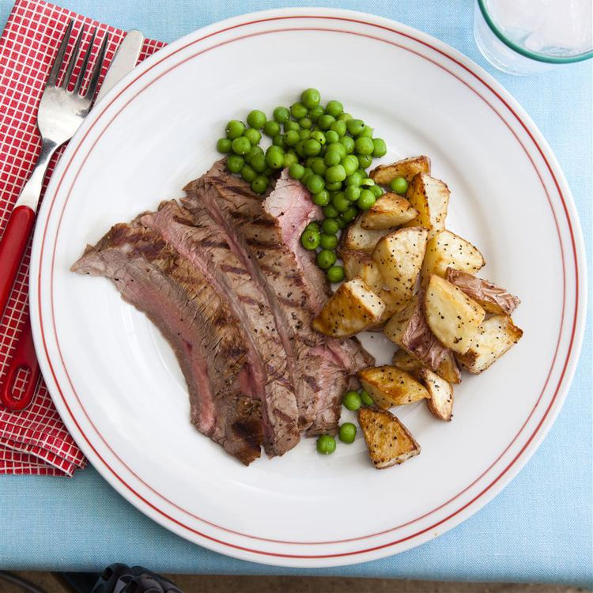

Steak

Description
A great flank steak marinade like this one is important if you want a tender, juicy, flavorful steak. Make sure you marinate your flank steak for at least 2 hours for best results or longer if you have time. This wonderful quick and easy recipe also works great when the steak is sliced and used for fajitas.
Ingredients
- 1/4 cup soy sauce
- 2 tablespoons olive oil
- 2 tablespoons ketchup
- 1 tablespoon honey
- 2 cloves garlic, minced
- 1 1/2 pounds flank steak
Steps
- In a medium bowl, mix soy sauce, olive oil, ketchup, honey, and garlic. Place steak in a shallow glass dish with the marinade, and turn to coat. For optimum flavor, rub the liquid into the meat. Cover, and marinate in the refrigerator for 2 hours.
- Preheat grill for medium-high to high heat.
- Lightly oil the grill grate. Place steaks on the grill, and discard the marinade. Grill meat for 5 minutes per side, or to desired doneness.